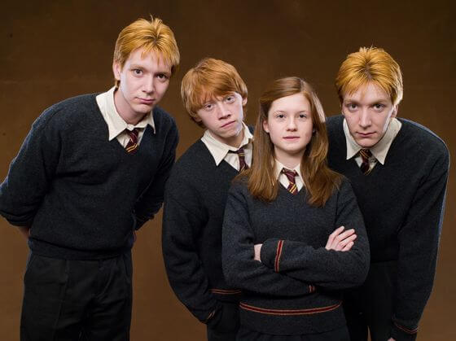
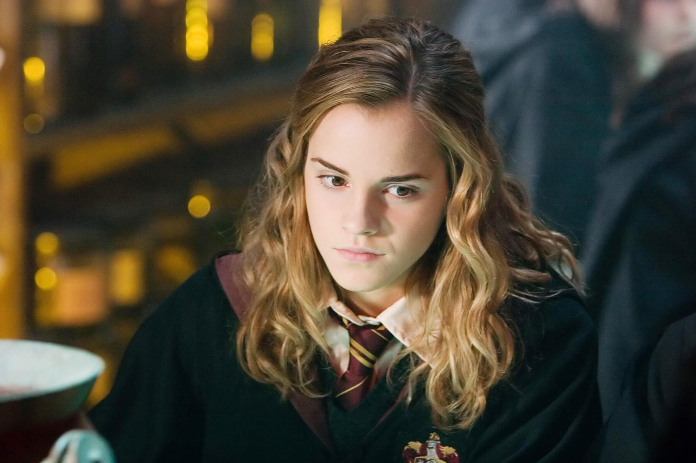
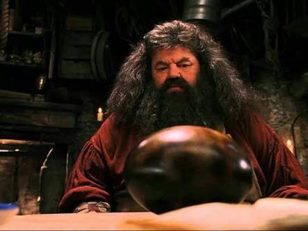
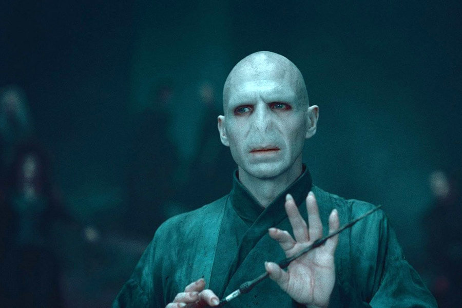
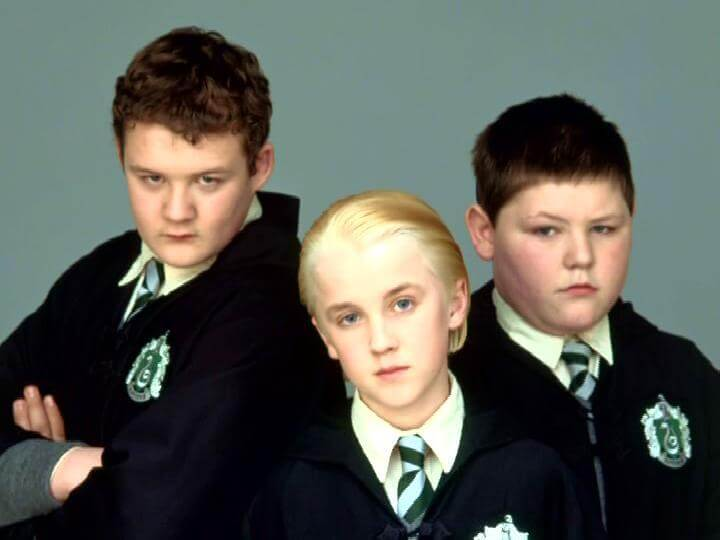
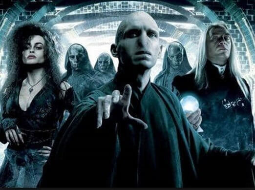

Algunos de los amigos de Harry Potter

Familia Weasley
Una gran familia de pelirrojos que ayudan a Harry en sus desafíos, en ella se encuentra uno de sus mejores amigos: Ron.

Hermione Granger
La otra mejor amiga de Harry, aunque es de padres muggles (personas no mágicas), no hay truco de magia qe se le escape.

Rubeus Hagrid
Mago semi gigante, es el que ayuda a Harry a introducirse en el mundo mágico, enviado por el profesor Albus Damblendore.
Algunos de los enemigos de Harry Potter

Tom Riddle
Más conocido por Lord Voldemort, es el mayor enemigo de Harry Potter, mató a sus padres e intentó matarlo a él.

Malfoy y amigos
Enemigos de Hogwarts, Draco y sus amigos le hacen la vida imposible a Harry en la escuela. Al final se convierte en secuaz de Voldemort.

Mórtifagos
Secuaces de Voldemort, lo ayudan a mantenerse con vida, entre ellos se encuentra Lucious Malfoy, el padre de Draco